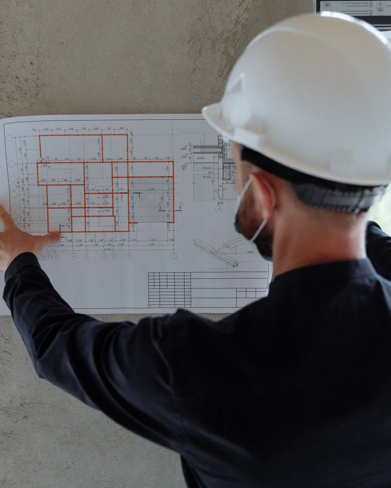
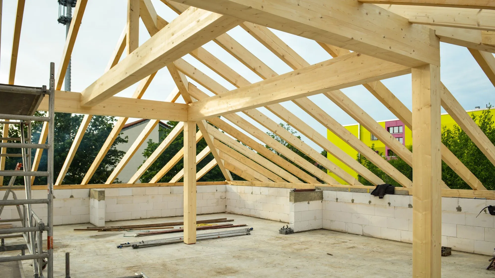
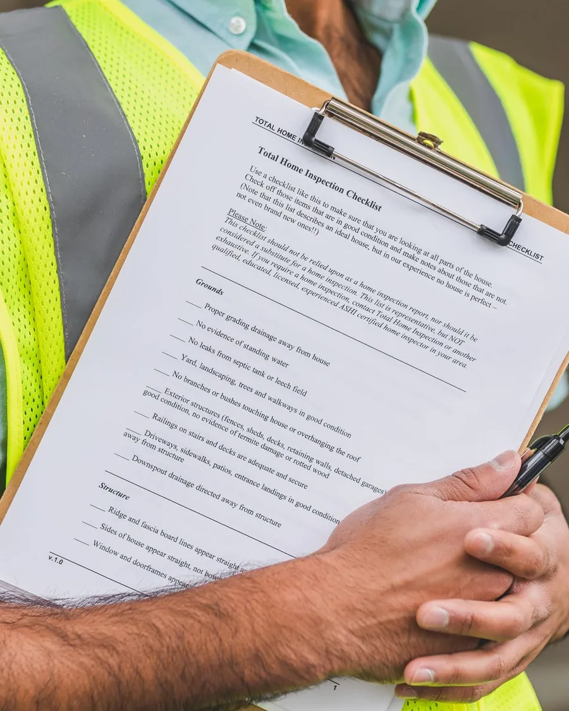
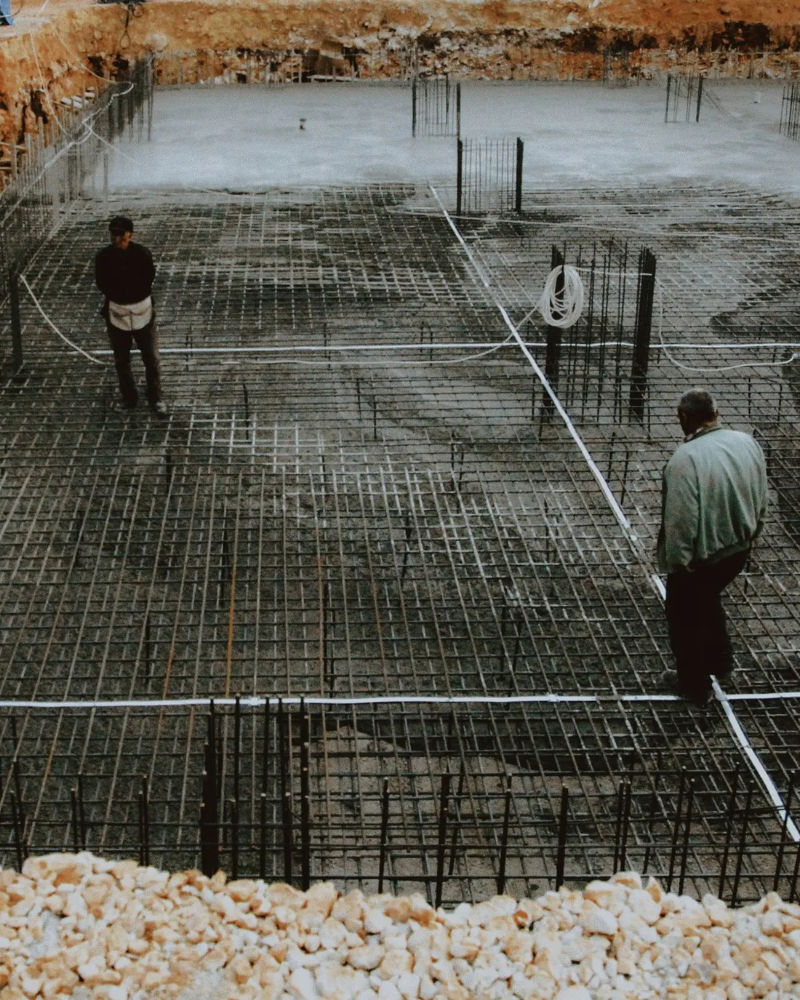
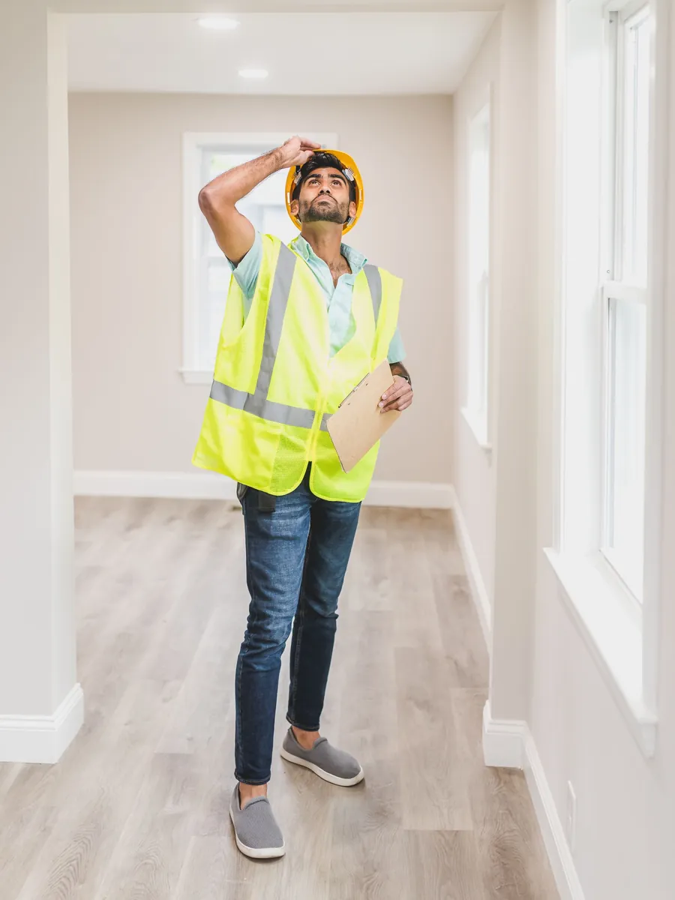
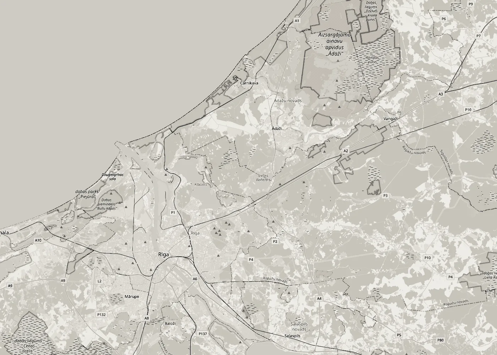

01Руководство строительством
Организуем строительство здания: порядок работ, бригады, поставки материалов и сроки. Ведём журнал работ и акты скрытых работ.
Подробнее
Руководство строительством · Технадзор
Руководим строительными работами и ведём технический надзор на стороне заказчика: следим, чтобы работы соответствовали проекту, нормативам и договору, от фундамента до сдачи здания в эксплуатацию.
Услуги
В реестре строительных предприятий наша сфера: руководство строительными работами зданий и строительный надзор.

01Организуем строительство здания: порядок работ, бригады, поставки материалов и сроки. Ведём журнал работ и акты скрытых работ.
Подробнее
02Представляем заказчика на стройке: проверяем соответствие работ проекту и нормативам, принимаем скрытые работы и фиксируем дефекты.
Подробнее 03
03Помогаем подготовить исполнительную документацию и сдачу здания в эксплуатацию, чтобы после стройки всё было в порядке и на бумаге.
Подробнее
Что проверяем
Важнее всего работы, которых потом уже не видно. Их мы проверяем до того, как их закроют.
До бетонирования: арматура, защитный слой и закладные детали по проекту.
Вертикаль и швы кладки, перемычки, опоры перекрытий и анкеровка.
Шаг стропил и крепления, паро- и гидроизоляция до укладки кровли.
Водопровод, канализация, отопление и электрика до закрытия стен и полов.
Список дефектов и исполнительная документация перед сдачей здания в эксплуатацию.
Как работаем
Напишите, где находится объект, что строится и на каком этапе работы. Если есть проект, приложите его.
Изучаем проект и смотрим объект, чтобы понять объём работы.
Договариваемся об услуге, частоте выездов на объект, сроках и цене. Всё фиксируем в договоре.
Руководим работами или ведём надзор до сдачи здания в эксплуатацию.

Где работаем
Работаем в Адажи и по всему Пририжью. Если объект в другом месте Латвии, напишите, договоримся.
Написать
Контакты
Напишите, что строится, где и на каком этапе работы. Ответим с предложением.
E-mailnorix5@inbox.lvГде мыАдажи, Адажский край